The high-frequency-high-amplitude features (called chirps) present in the time-frequency maps of gravitational waves provide supporting evidence to the unproven theory that gravitational waves carry linear momentum. In this project, we aim to devise and implement methods that are able to automatically summarize (predict) the chirp features of an input time-frequency map. We used two different algorithms to achieve this goal, one characterized by dynamic thresholding while the other characterized by triangle thresholding. Both algorithms achieved excellent results that well surpassed the evaluation metrics that we proposed.
Teaser Figure: Two black holes orbiting each other, curving the nearby spacetime and emitting gravitational waves.
INTRODUCTION
Background and Motivation
On September 14, 2015, the Laser Interferometer Gravitational-Wave Observatory (LIGO) detected gravitational waves directly for the first time in human history. This will certainly be considered one of the most significant events in the 21st century, since it marks the beginning of an era that humans can not only “see” the universe through electromagnetic waves but also “hear” the universe through gravitational waves!
The problem is that Einstein’s general relativity predicts that gravitational waves carry linear momentum, but we have no evidence of this effect yet. Fortunately, the amount of net linear momentum carried by the gravitational wave emitted by coalescing binary black holes can be inferred from the recoil velocity (or kick) of the merged final black hole. If we can observe such a kick, it would provide evidence that gravitational waves carry linear momentum.
The existence of such a kick is closely related to the high-intensity, high-frequency features (called chirps) in the time-frequency maps of gravitational waves, as shown in Figure 1.
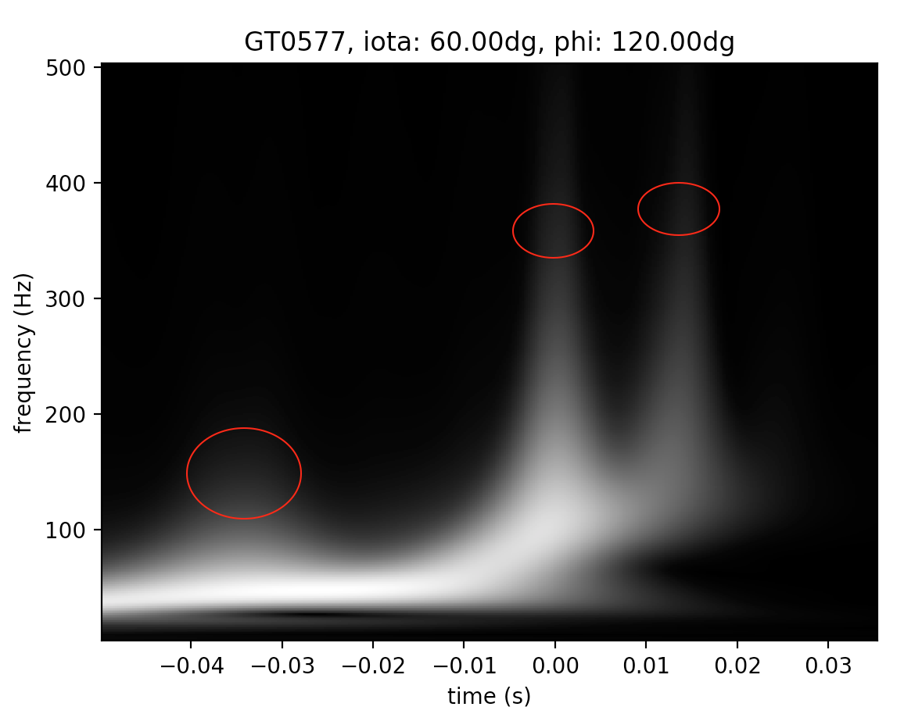
Figure 1: A sample time-frequency map of simulated gravitational wave. The chirps are marked out by red circles.
For practical reasons, we want to first study the chirp features on the gravitational waveforms produced by numerical relativity simulations of binary black holes. With a large number of time-frequency maps that are potentially interesting to a researcher, it will be beneficial to use computer vision algorithms to automatically process and label these time-frequency maps with respect to their chirp features. Such a tool will be very helpful for researchers to select the time-frequency maps with the chirp features of their interest, or to classify a large number of time-frequency maps based on their chirp features. Therefore, the goal of our project is to apply techniques of computer vision to automatically label these time-frequency maps in terms of the chirp features.
APPROACH
Problem Defined
The inputs to our system are time-frequency maps that are generated from raw waveform data in the format of HDF5 files produced by numerical relativity simulations.These raw waveform data were produced by the numerical relativity group at Georgia Tech and are publicly available at http://www.einstein.gatech.edu/table/. The process that generates these input time-frequency maps from the raw waveform data was carried out by one of our team members who is currently involved in research of the Georgia Tech numerical relativity group.
Specifically, the inputs to our system are time-frequency maps of simulated gravitational waves within a specific time window around the merger time (defined at t=0 sec) of binary black holes. The time window is approximately (-0.050 sec, 0.035 sec) since physically we are only interested in chirps within this domain. Each time-frequency map input will consist of a 2-D intensity array of 500 rows and 350 columns, a 1-D time array of 350 elements, and a 1-D frequency array of 500 elements. The time array and the frequency array define the coordinates of the intensity array. The elements of the intensity array have dimensionless values between 0 and 1; those of the time array have monotonically increasing values from about -0.05 sec to 0.035 sec; those of the frequency array have monotonically increasing integer values from 4 Hz to 503 Hz. Figure 1 in the Introduction section shows such a sample input.
The output of our system is closely related to three questions that we want to answer given a time-frequency map. First, how many chirps are there in the time-frequency map? Second, what is the time of each chirp on the time-frequency map? Third, what is the approximate total intensity (you can think of it as total pixel intensity) of each chirp? Notice that physically we only care about whether a chirp is strong or weak in terms of its total intensity instead of the exact value of its total intensity. For example, two sequences of intensities, (2, 20, 22, 97) and (4, 25, 20, 83) are essentially the same for our purpose, where we say they have the same relative intensities. Therefore, given a time-frequency map instance as the input, the output of our system will be
The number of chirps presented in this time-frequency map
The times corresponding to each identified chirp
The approximate total intensity of each chirp
Overall Approach
This problem, in the context of physics, is a relatively new problem in the domain of gravitational wave data analysis and there are no known existing solutions specifically targeted this problem yet. Therefore, for this problem we will need to devise our own evaluation metrics. We split up our approach to the problem into two different algorithms, each identifying the chirps and calculating the relative intensities independently. For calculating the chirp intensities, it can be hard to understand the returned numbers intuitively, especially in the case that the intensities are given in a relative sense so that different algorithms can return the intensities of different scales. Therefore, in presenting our results, we decide that it will be better to draw the bounding boxes within which the intensities of the chirps are computed in order to give more visually-intuitive results.
The First Algorithm
The first algorithm uses dynamic thresholding to segment a time-frequency image into foreground and background. The median intensity of the entire image + a factor (experimentally determined to be 0.1) of the standard deviation of the intensity values over the entire image was set as the dynamic threshold.
After thresholding the image, an array was made that contained the maximum frequency values of the foreground at each time value. Then the local maxima and minima of this array were identified by simply going over this array once. In order to eliminate the false positive extrema due to noise in the boundary of the foreground, if two maxima/minima were identified within 8 horizontal pixels from each other, then only the higher/lower-frequency pixel would be identified as a peak/valley. The number, 8, as the minimum horizontal pixel separation, was determined experimentally. Besides, a minimum peak height of 125 pixels (corresponding to a frequency of 128 Hz) was established for locating the peaks in order to eliminate false positives that came from very small chirp-like foreground shapes. Once the peaks are located, we will know how many chirps are present in a time-frequency map and the corresponding times of these chirps. A couple of visual examples of locating the peaks and valley points are shown in the Qualitative Results section.
With the identified peaks and valleys of the foreground waveform, we can construct bounding boxes to compute the total intensities of the chirps. The total chirp intensity was calculated by first summing up all the intensity values inside a bounding box defined by a peak and its nearest valley. This value was then doubled to obtain the total intensity because a chirp is nearly symmetric in shape. A visual example of constructing the bounding boxes is also shown in the Qualitative Results section.
The Second Algorithm
The second algorithm also builds up on locating the peak and valley points, but identifies and uses them in a different way from the first algorithm. Figure 2 shows the basic approach. First, we determined experimentally that triangle thresholding [1] was the most appropriate method for binarizing the image among the different methods experimented (see the next section). Therefore, an image was first binarized by triangle thresholding. The boundary of the foreground waveform was then found as the boundary of the binary segmentation, and then for each column in the image, an upper most boundary point was isolated. Finally, the peaks and valleys were located as the local maxima and minima of the upper boundary, using the function scipy.signal.find_peaks. In order to avoid detecting false positive peaks, the function parameter, minimum horizontal distance between peaks, was set to be 25 pixels, and the another parameter, minimum prominence, was set to 10 pixels.
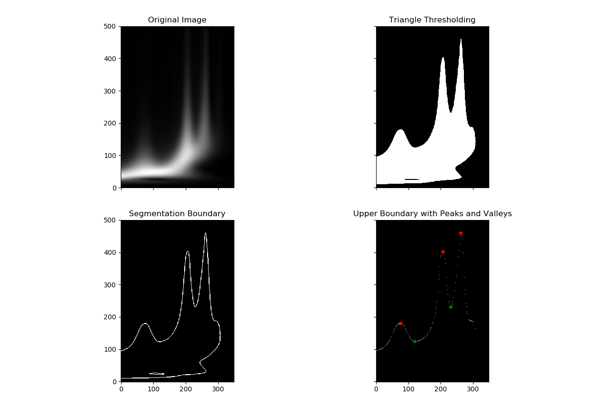
Figure 2: A demonstration of the basic approach of the second algorithm.
To evaluate the total intensities of the chirps, a bounding box was calculated for each chirp detected, and 2-dimensional numerical integration was then performed within the bounding box by using scipy.integrate.trapz function twice. The left and right bounds of the bounding box were defined by the closest left and right valley points to the peak of interest. If no such valley point exists, the bounding box will extend to the edge of the image. The lower limit of the bounding box was defined as the higher frequency value between the left and right valley points. If no such valley point exists, the bounding box will extend to the lower edge of the image. Moreover, the upper limit of the bounding box always extends to the upper limit of the image in order to remedy the fact that some of the points within a chirp might not be thresholded into the foreground. Notice that we are taking advantage of the fact that the low-intensity pixels will not affect the overall integration result much. Figure 3 shows the bounding boxes computed for two example chirps.
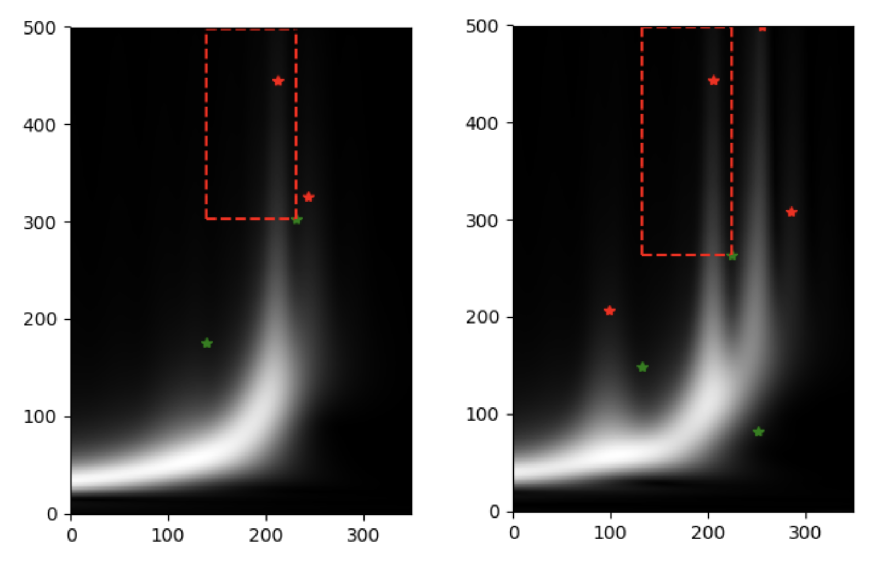
Figure 3: Chirp bounding boxes for two example chirps.
EXPERIMENTS AND RESULTS
Experimental Setup
Although our approaches to this problem are the signal processing techniques, we will still borrow the concepts of training and testing data from machine learning. We have prepared two separate sets of data -- one for developing our system (“training”) and the other for testing. Each instance of the training and testing sets has the same format as the time-frequency map input described in the Problem Defined subsection. Each instance has been annotated manually by one of our group members in terms of
the number of chirps present
the approximate time for each chirp
Notice that we chose not to annotate the instances in terms of the total intensity of each chirp because annotating such a property by eyeballing is subject to significant errors.
We have prepared 90 training instances and 90 testing instances, randomly sampled without replacement from an original data set of 180 annotated instances. We chose to annotate only 180 instances because such a number of instances already provide a more than comprehensive coverage of all the potential forms of chirp features. Due to random sampling, each of the training and testing sets should also provide a comprehensive coverage of the chirp features. Besides, since we are tackling this problem with signal processing techniques instead of data-driven methods, we think the prepared training and testing sets are good enough for developing and testing our algorithms.
Evaluation Metrics
When the training and testing instances were being annotated, some of the chirps were found to be very weak in intensity and were thus ambiguous. Subject to uncertainties, the ambiguous chirps of relatively lower intensities were usually not marked as chirps while those with relatively higher intensities were usually marked with chirps. Since these ambiguous chirps are widely present in our data set, it is estimated that about 20% - 30% of our annotated instances are subject to such ambiguity. Moreover, among the 180 instances in total, it is likely that 5-10 of them were annotated mistakenly, which accounts for about 3% - 5% of the total number of annotated instances. Since our algorithms would be able to make predictions consistent with some of the ambiguous annotations, we think a 20% of error rate of an algorithm with respect to the annotations is considered a very good outcome. Since there are no existing solutions to our problem yet, we want to be a bit conservative and use a 30% error rate, i.e. a 70% accuracy, as the rule of thumb for judging our algorithms. Specifically, we will consider an algorithm as successful based on the following criteria:
For counting the number of chirps, an accuracy of over 70%. Specifically, we want (the number of test instances whose annotated number of chirps match the algorithm’s prediction / the total number of test instances) > 70%.
For identifying the time locations of the chirps, a total accuracy of over 65% over the entire test set. Specifically, we want (the total number of correctly predicted chirp times over the test set / the total number of annotated chirps in the test set) > 65%. We define a tolerance window of 0.01 sec such that if the time position of a chirp predicted by our system deviates from the corresponding annotated time position by less than 0.01 sec, then we consider it as a correct prediction. We define such a tolerance window and a slightly looser criterion for success in this criterion than the previous one because in addition to the potential errors involved in identifying the ambiguous chirps, the manual annotation of the time positions are likely to include non-trivial errors.
Notice that we decide not evaluate the total chirp intensities returned by the algorithms against the training or the testing sets, because it is very hard to annotate the data sets in terms of the relative total intensities between the chirps, and reading the intensity values directly from the colors of a time-frequency image and doing intensity summation/integration by eyeballing can lead to extremely inaccurate results. However, we will still show bounding boxes within which the total chirp intensities are computed so that we can examine visually whether the total intensities are computed in the right place.
The First Algorithm
Experiments
Before the dynamic thresholding method was decided, k-means segmentation was experimented to quantize the image into k clusters with respect to each pixel’s intensity. The cluster with the lowest intensity is assumed to be the background. Example results for k=4 and k=2 are shown below in Figures 4 and 5 respectively.
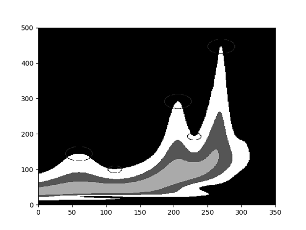
Figure 4: K=4 segmentation of foreground and background.
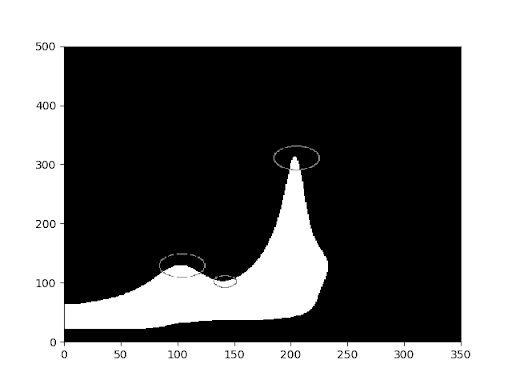
Figure 5: K=2 segmentation of the foreground and background.
Although the k-means segmentation method seems to produce reasonable foregrounds, it does not yield very good results in counting the number of chirps and identifying the chirp times. To demonstrate this deficiency in an overall sense, Table 1 shows the results of running the first algorithm based on k-means segmentation over all the data instances (training + testing) with respect to the two aforementioned evaluation metrics. Generally, increasing k will lead to an increase of the number of peaks detected per image, as the algorithm will recognize fainter peaks that aren’t recognized in the annotation process.
K
Accuracy for counting chirp number
Accuracy for locating chirp times
2
0.417
0.619
3
0.6
0.801
4
0.767
0.895
5
0.717
0.854
6
0.556
0.774
7
0.467
0.705
8
0.333
0.577
Table 1: Results of running the first algorithm based on k-means segmentation for different k
Results
After switching from k-means segmentation to dynamic thresholding, which is the current approach, we found the first algorithm was able to correctly identify the number of chirps in the test set with an 83.3% accuracy and locate the chirp times with an 90.3% accuracy --- both higher than the results of the best-performing k-means approach (k=4).
The Second Algorithm
Experiments
Before the triangle thresholding approach was selected, different thresholding techniques were experimented, as displayed in Figure 6. As we can see, the triangle thresholding method was able to capture more of the weaker intensity signals in the image than the other methods.
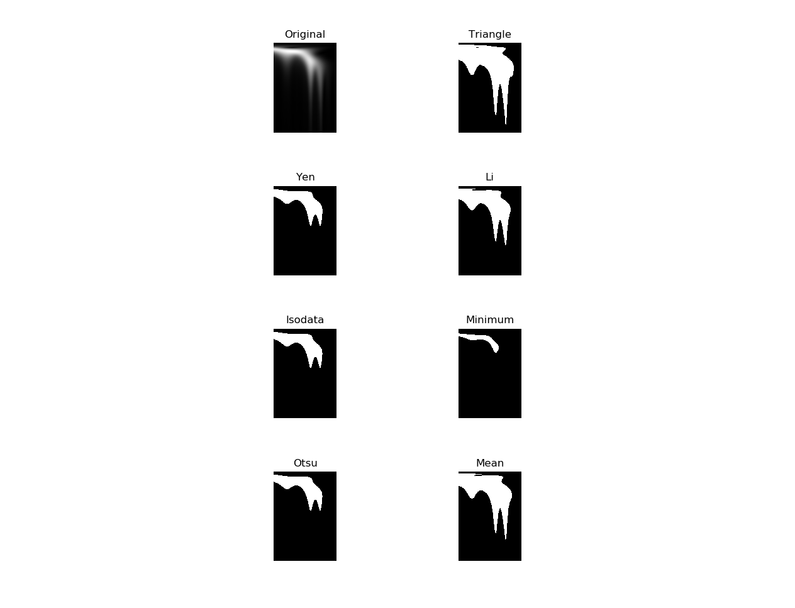
Figure 6: Demonstrating different thresholding techniques on an example time-frequency image.
Additionally, normalized cut was experimented as a potential segmentation method, where an image was first segmented into super pixels using SLIC segmentation [2]. From the generated super pixels, a region adjacency graph (RAG) was constructed based on the positional connectivity and mean intensity of the super pixels. The normalized cut algorithm [3] was then applied to the RAG to find a suitable segmentation of the RAG, and thereby the original time-frequency image. Figure 7 shows an example normalized cut experiment. Despite the best effort in adjusting the parameters involved in SLIC and normalized cut, the segmentation was not able to expose the chirps as desired.
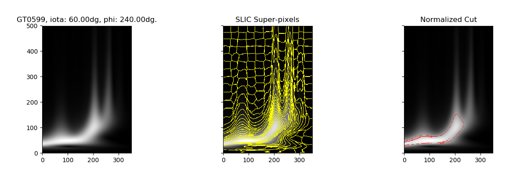
Figure 7: Demonstration of the normalized cut experiment on an example time-frequency image.
Results
The performance of the second algorithm was evaluated using the evaluation metrics specified above over the test set. For counting the number of chirps, the algorithm detected the same number of chirps as human annotation in 85.6% of the tested instances. For locating the chirp times, the algorithm an accuracy of 97.5% against the annotations.
Comparison and Further Analysis
To obtain the foreground waveform, the first algorithm uses dynamic thresholding whereas the second algorithm uses triangle thresholding. Both of them locate the peaks and valleys by finding the local maxima and minima of the upper boundary of the foreground, but they employ different techniques in order to avoid detecting false positive peaks. Both algorithms try to compute a bounding box to evaluate the total chirp intensities based on the located peak and valley points, but they utilize these critical points differently.
The two algorithms achieved an accuracy of 83.3% anad 85.6% respectively in identifying the number of chirps. And they achieved an accuracy of 90.3% and 97.5% respectively in identifying the chirp time locations. It is interesting that both algorithms achieved higher accuracy in the second criterion. The reason is likely that, although the algorithms might not count the number of chirps correctly in a test time-frequency map, they will still identify some of the chirps (and the corresponding times) correctly in that time-frequency map, hence resulting in a higher accuracy for chirp-time localization.
Overall, while the second algorithm achieved slightly better accuracies, both algorithms gave generally accurate results, which well surpassed the evaluation criteria originally proposed by our team.
QUALITATIVE RESULTS
In this section, we will show several visual examples that demonstrate the workings of the two algorithms.
The First Algorithm
Figures 8 and 9 show two example results of locating the peak and valley points after dynamic thresholding. The second example, in particular, demonstrates a failure case where the rightmost chirp was not properly exposed after thresholding. Figure 10 shows the bounding boxes that are used to calculate the total chirp intensities.
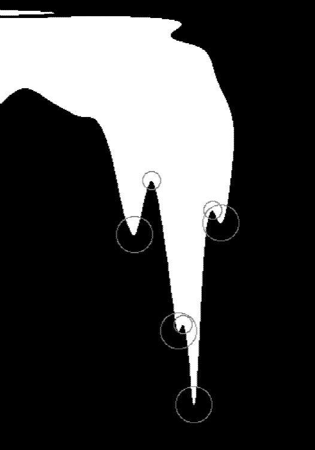 Figure 8: An example result of the first algorithm that shows the located peaks and valleys after dynamic thresholding. The large circles represent peaks, while the small circles represent valleys. Notice that the time-frequency map is inverted with respect to Figure 1, for plotting convenience.
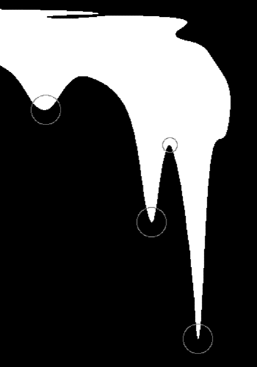 Figure 9: Another example result for the first algorithm. The rightmost part of the foreground is fairly close to a small peak as shown in Figure 2, but the threshold value is slightly too high to preserve this property.
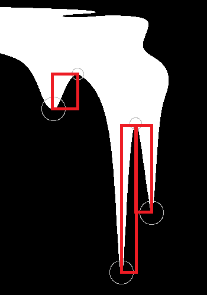 Figure 10: The bounding boxes used by the first algorithm to calculate (half of) the total chirp intensities.
The Second Algorithm
Since most of the visual examples for the second algorithm have already been demonstrated in the previous section, an example failure case is exhibited in Figure 11 for a better understanding of the algorithm. In the failed cases, generally, the algorithm tended to detect false positive chirps where the existence of the chirps were indeed ambiguous.
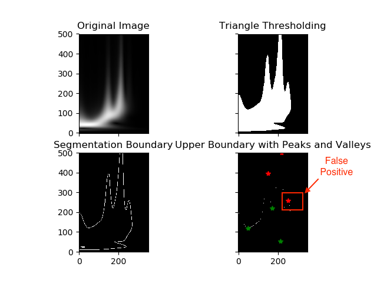
Figure 11: A false positive chirp detection for the second algorithm.
CONCLUSION AND FUTURE WORK
The chirp features in the time-frequency maps of gravitational waves provide useful information about whether or not the gravitational waves carry linear momentum. To study this subject, it will be very useful to develop algorithms that are able to automatically summarize (predict) the chirp features of an input time-frequency map, which defines the goal of our project.
In this project, we developed two algorithms that are able to count the number of chirps in a time frequency map, locate the time locations of these chirps, and compute the relative total chirp intensities. Both algorithms achieved excellent results that well exceeded our original expectations.
Future steps for the first algorithm include using and combining other statistics of a time-frequency image to determine a better dynamic threshold. Future steps for the second algorithm include identifying more accurately the group of pixels belonging to a chirp in order to estimate the total chirp intensities more precisely, and further explorations in different segmentation techniques.
REFERENCES
G. W. Zack, W. E. Rogers, and S. A. Latt, “Automatic measurement of sister chromatid exchange frequency.,” J Histochem Cytochem., vol. 25, no. 7, pp. 741–753, Jul. 1977.
R. Achanta, A. Shaji, K. Smith, A. Lucchi, P. Fua, and S. Süsstrunk, “SLIC Superpixels Compared to State-of-the-Art Superpixel Methods,” IEEE Transactions on Pattern Analysis and Machine Intelligence, vol. 34, no. 11, pp. 2274–2282, Nov. 2012.
J. Shi and J. Malik, “Normalized Cuts and Image Segmentation,” IEEE Transactions on Pattern Analysis and Machine Intelligence, vol. 22, no. 8, p. 18, 2000.